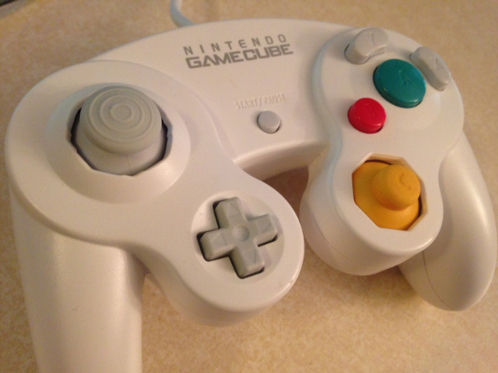
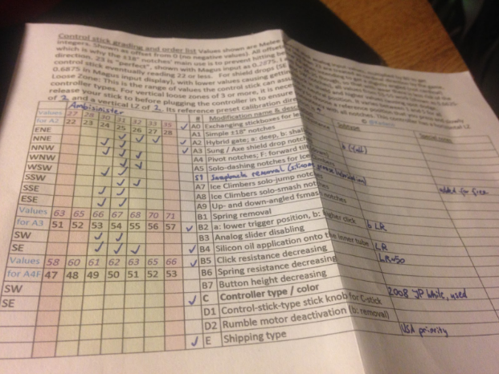
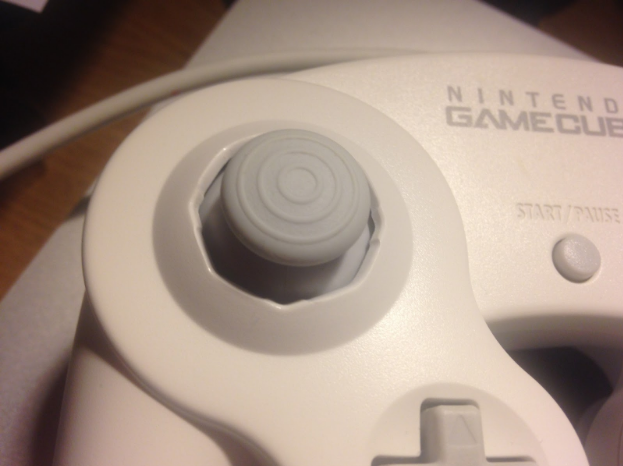
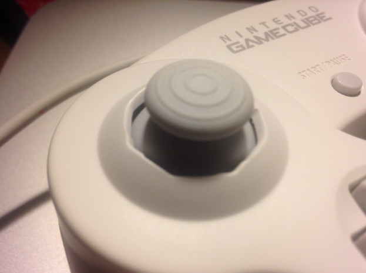
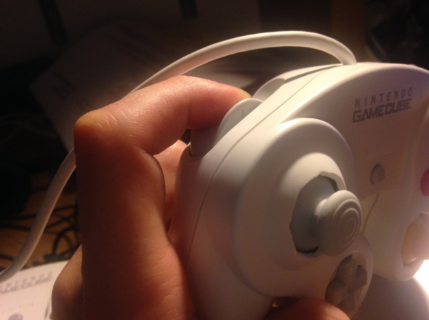
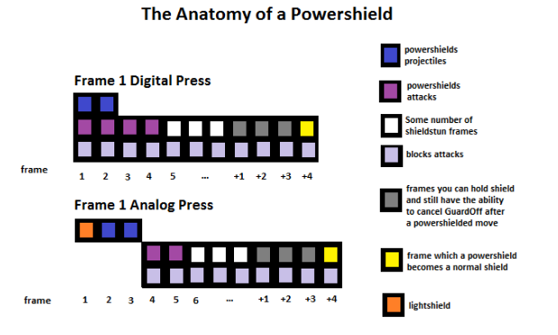

kadano_controller_review
Table of Contents
Review - Kadano's Modded Controllers
I recently purchased a custom modded controller courtesy of Kadano. These things caused quite a stir in the community when Kadano announced he was making them, and I had been looking to purchase another controller anyways, so I took the plunge and bought one.
Specifically, I purchased the following:
2008 Japan White Controller, Used
- Sung Method Shield Drop Notches
- Hybrid gate, all octants, shallow
- Exchanged C stick and analog stick springs
- Elevated Trigger Point (both L and R, ~75%)
- Reduced click resistance (L and R, ~50%)
- Lubrication (L and R inner tubes, Analog stick for snapback removal)

This ran me about $150 (I had to save up for this!)
So there's a lot to go over, but I'll be providing extensive thoughts on each of these elements. I'd like to consider myself more technical than average, and I've done many of these modifications myself on controllers for my own use and for others (Slox, Bolt, and Fission, to name a few) who all gave me very positive feedback. As such, I feel that I have a leg to stand on both in describing the effects of the mods as well as the craftsmanship.
So let's begin:
"Unboxing"
It took a very, very long time to get this controller from the time of order. I ordered this controller on November 16, 2015 (I was controller #55) and received it on June 18, 2016 (7 months, 2 days). I don't particularly blame Kadano for this since he had a huge backlog and this controller was a bit of a large project. Once he began working on it, though, it didn't take too much time for it to be completed.
I was pretty impressed by most of the shipping process / packaging. I was provided with package tracking (certainly a godsend for an international purchase) and it arrived at my house in New Jersey from Vienna in 9 days, which I'm satisfied with.
The box was a bit banged up when it arrived on my doorstep, which was a little worrisome, but Kadano packed this thing with so much bubble wrap that I'm confident it could have been thrown from a building and still perform the same. After opening it and digging through the wrap, I saw that the box contained the controller (cables tied, no visible scratches) and a small printout: a description of what I ordered, the values for each notch, information on the controller's loose zone, and a detailed explanation on what everything meant.

Hybrid Gate
Definitely the most drastic change to the controller, and easily the most difficult to do - it's probably the only mod on this controller that would not be wise to perform yourself unless you consider yourself very skilled at this type of work.

I selected the shallow version of the mod because I use a lot of “roll” inputs in my play (moonwalks, run cancels, cactuar dashes, shield drops, etc.) I didn't want to struggle to reprogram my muscle memory for these things (especially shield dropping, which a huge part of my game is based upon), so I specifically asked for shallower notches than normal.
As advertised, these notches are shallow - very very shallow, almost to the point where I'm a bit worried that they'll wear away after a few years use. (Perhaps it's optimistic of me to think the controller will live long enough to wear down the notches, but I made this purchase because I figured the cost per use would be astronomically low. That said, I will update this in a year or so with whether or not my concerns were unfounded). It feels different, and weirded me out a little at first. That said, the shallow notches were definitely the right pick for me - roll inputs still feel more or less the exact same (albeit with slightly different tactile feedback) and for the most part it felt like playing on any other controller, which is what I wanted out of the shallowness.
Hybrid gate takes a little getting used to, at least with the shallow octants. The notches don't put up much of a fight when you roll into them, so it's easy to roll past them when trying to input an angle. They don't magically make you good at the angles, but what they do really well is provide a tactile cue for angles that are normally ambiguous to hit on normal controllers, which provides a form of feedback, which makes learning the actual angles easier. Hitting the difficult firefox angles or long wavedashes are obviously a bit easier on this controller, but the reason I opted for this mod in the first place wasn't to make these angles easier, but to make learning them easier and to add a little consistency (think less “automatic” and more “training wheels”). I obviously can't say much about controllers with the deeper notches (I could see those being “easy mode” controllers, but I have no real frame of reference) but Hybrid gate with the shallow notches gave me what I wanted out of this mod without any of the potential negatives I had imagined the deeper notches would bring.
The craftsmanship on this particular modification is quite good - certainly living up to Kadano's reputation as an expert modder. Visually, it's pretty impressive - it looks pretty natural and you probably wouldn't be able to tell it was notched unless you held it in your hands yourself. Rolling the stick around in a circle produces subtle but noticeable “bumps” at each of the notches, and all of the notches hit close to the optimal values (the sheet details the notch values and almost all of them are centered at 25).
There are two things I wasn't satisfied with. The first is that the West-southwest notch was a bit too small for my tastes - it seemed to be notched at a slightly gentler angle than the others which made it the most inconsistent of the notches. The second, related issue is that the notches are not all quite the same size. Some were a little larger than others and you can really tell that they're handmade, which was a bit distracting when I was trying to get used to it. These are both very minor qualms (obviously very easy to ignore after playing with it for a while), and I certainly couldn't imagine another modder doing a better job without some way of manufacturing the shells themselves.

There's some cool tricks you can get out of the angles on this controller aside from your typical mangle/perfect WD.
- The smallest upwards angle will allow you to grab ledge as fox
- The highest downwards angle will allow you to not bounce if firefoxing from air -> ground
- The highest nonvertical angles will let you hug the ceiling of battlefield and grab the ledge, making saving yourself a bit more consistent
Pretty cool.
Overall Hybrid Gate was a little weird and took some getting used to, but I was pretty happy with it and it did what I was hoping it would do.
Sung Notches
Not much to say with these - they both work perfectly. Not having a controller that can shield drop at the notches is a blunder (it's virtually 100% controller dependent) and you can learn to do it yourself or you can pay Kadano $10 to do it, which felt pricey at first but in hindsight is pretty reasonable.
The finish on these notches are very well crafted and nearly undetectable unless you've done lots of notching yourself and look very, very closely. Actually performing this mod is not all that difficult (especially now that 20XX 4.0 has a live analog input display in the debug menu under extras) but these have the added bonus of looking as clean as, well, a completely normal controller's notches.
{kind=link}
There's no excuse to not know shield dropping in 2016 and there's no reason to not have a controller that can't shield drop in both directions.
Analog stick
The two modifications performed on the stickbox itself were snapback removal and spring replacement.
The spring replacement was interesting, and another one that I wasn't using on my current controller at the time (although I had done this mod on other controllers and used them a bit). It's a very different feel, and pretty easy to move around with. Although it's very noticeable (I expect any casual player would be able to detect the difference in a blind test) I don't think the effect on gameplay is that drastic. The best way I can describe it is that it makes the analog stick feel “softer” and that it makes fast analog stick movements require a bit less force. The big reason for this mod is to make backdashing a little easier. Getting fairly consistent backdash inputs is doable on any controller, but generally involves a harsh smash input. Since swapping out the spring reduces the force necessary for an analog input, it requires less force to move the stick fast (although you're still at the mercy of the game's literally random polling timer). If you struggle with backdashes then this is probably worth getting, but if you don't then it's not the end of the world if you don't.
The snapback removal was generously added for free, and it seems like it did what it was intended to do. Lasering on this controller seems pretty good (I tried both fox and falco) and although I still got the occasional reversed laser it felt like a significantly above average controller (I would expect my falco player friends would have no problems using this). My only hesitation with reviewing this is that I didn't know how good or bad this controller was before the mod - I wish I could have tried it beforehand to see what kind of difference it made. But, as it stands, there doesn't seem to be much snapback on this controller, so hooray!
Triggers
I'm lumping all of these together because I want to make a blanket claim.

I personally think that the trigger configuration on this controller is a straight upgrade compared to standard triggers. Coupled with the fact that this mod is extremely easy to perform yourself and very inexpensive at that, I think many players would benefit from at least considering making the switch.
To understand this, it's necessary to talk a bit about powershield mechanics.
The problem with frame perfect analog inputs is that, depending on the timing of the game's polling, it could randomly "snapshot" your input halfway between unpressed and pressed. This is the same reason dashing back is so hard - if you do the input perfectly, sometimes it will still miss because the game checked your analog stick in the middle of your dash input and you'll get a tilt turn anyways.
Shielding is the same - if the game checks your triggers halfway between being unpressed and reaching the digital press, you won't get the input you want.
This by itself isn't such a big deal - you would think that the game checking your shield early would just prevent a powershield, which isn't the worst thing in the world, right? You'd still get a lightshield and the negligible extra hitstun / missed powershield aren't really the most terrible possible results.
The problem is that the engine “generously” allows you to still powershield if you're in lightshield for only 1 frame and then immediately reach the digital press on frame 2. This would've solved the previously mentioned problem, but for some reason you're actually completely vulnerable to non-projectile attacks for the first two frames of powershield.

In effect, if you're a little slow on your shield input then you're essentially not shielding for two frames. This is bad!
This mod is very easy to perform yourself and lets you retain all the things you would need triggers for in the first place. You can still L cancel with lightpress / lightshield on both triggers. You can still tech / wavedash / shield / powershield / zps / whatever. It's also easier on your hands (more specifically: if you have longer fingers then elevating the triggers prevents “pinching”, whereas shorter fingers would prefer depressed triggers instead, preventing “stretching”) and decreases the distance to the digital press, which makes powershielding slightly easier and avoids the Analog->Digital shield transition. Depending on the player, springless / no lightshield triggers might suit your style better, but compared to vanilla triggers I can't think of a single downside.
Overall
At the end of the day I'm satisfied with this purchase - it's not a cheap controller but it's certainly a good one and I'm happy I bought it.
The takeaway from this review is that these controllers aren't outrageous or broken. If you compare this controller to a "perfect" unmodded controller (shield drop at both notches, low analog stick resistance, triggers that don't stick, etc), this controller isn't even really a huge upgrade, and I'd consider the distance between a third party controller and a vanilla controller to be much greater than the distance between a vanilla controller and a Kadano controller. Players seeking to buy a Kadano controller because they want to instantly become better at Melee would probably be better suited purchasing lessons, and players decrying Kadano for selling “cheater controllers” should realize that almost anything in this controller (except, perhaps, hybrid gate) could be done yourself for $11 and a free afternoon.
Basically, you can think about controllers like this in one of two ways. You could compare it to a LZR Racer Swimsuit, which was banned from competitive swimming for being “technological doping,” or you could compare it to a Tennis Racquet used by a top ATP player, which are standard even though they're expensive and specifically built to be good at certain things.
It basically boils down to this: is this controller going to be the reason you win a match? LZR Racers were banned on the ruling that Swimming ought to be be "based on the physical performance of the athlete," and after dozens of world records were broken FINA judged that the athletes were winning because of the suits, not simply "swimming well" because of them. This sets them apart from extensive tennis rackets because tennis rackets don't augment or define your actual play - they just let you do what you're trying to do. Since a lot of these controller mods are more what I'd consider “basic controller care” rather than “physical input augmenter” I'm inclined to compare it to the latter, although that opinion could change if Kadano follows through with his button remapping idea.
The cost of these controllers is frequently criticized, but I don't think that expensive peripherals are necessarily bad for a community (Melee is pretty inexpensive as it is, compared to the cost of a gaming rig for almost any other esport, or equipment for almost any sport). Like I mentioned earlier, $150 for something you use every day for a few years is really not that bad if you consider cost-per-use.
Overall, Kadano makes a fantastic product and I highly recommend it if you're looking for a bit of extra insurance that your next controller is a good one.
posted on 6/23/16